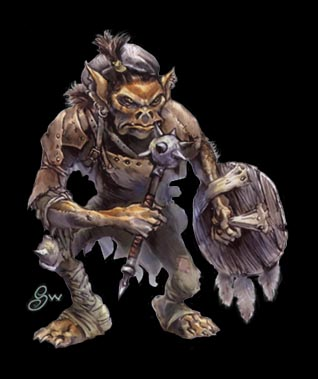
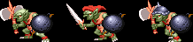
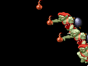
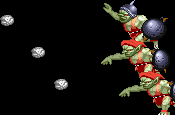

Goblin
|  | 이 작은 인간형의 생물은 평평한 얼굴, 넓적한 코, 뾰족한 귀, 큰 입, 그리고 작고 날카로운 송곳니를 가지고 있다. 직립 보행을 하지만 팔은 무릎을 덮을 정도로 길다. 룰상에서의 묘사 3~3.5피트의 키에 40~50파운드의 몸무게가 나가며 흐릿한 눈은 붉은색 혹은 노란색을 띄고 있다. 피부는 노란색 혹은 짙은 오랜지색에서 붉은색을 띈다. (SOM의 고블린하고는 다르다.) 번식속도가 빠른편이라 항상 많은 무리를 이루고 있으며 가치관이 대체로 악(evil)이라 다른 문명화된 종족에게 항상 위협이 된다. 작고 신체적 능력이 뛰어나지 못하기 때문에 머리숫자와 교활한 작전으로 전투하는 것을 선호한다. 언어는 고블린어를 쓰며 지능이 높은 고블린은 공용어를 쓰기도 한다. (이들이 선호하는 클래스는 로그(rogue)라고 한다.) |
| 평균 HP | 36~42 - 떡갈나무 요새(6) 이전/ 80 - 떡갈나무 요새(6) 이후 | |||||||
| 격파시 획득 XP | 300 | |||||||
| 등장 스테이지 | 오프닝 ~ 저거노트 전차(3-A) / 절망의 숲(5-A) / 파괴의 숲(7) ~ 화염의 세계(9-A) / 오버츄어(10-2) - 비밀의 지하 세계(9-C)를 거쳐서 왔을 경우 / 배틀 로얄(10-4) |
|||||||
| 드랍 가능한 아이템 | 1sp x 1 ~ 1sp x 2 (1~2sp) | |||||||
| 스틸 가능한 아이템 |
|
|||||||
|  게임상에서는 3가지 형태의 고블린이 등장하지만 생김새만 다를 뿐 능력치나 패턴은 전부 같다. |
가장 많이 등장하는 몬스터중 하나며 가장 약할 것 같은 외
모지만 실상은 그렇지도 않다. 한마리씩 때어놓고 보면 허약
하며 데미지도 약하지만 항상 때를 지어 등장해서 플레이어
를 정신적으로 괴롭힌다. 특히 난이도의 레벨이 높을 수록 움직임이 교묘해지며 더불 어 장거리 공격도 가능하기 때문에 방심할 수 없는 적이다. |
등장 방식
상자주위에 옹기종기 모여 앉아있거나 혹은 3마리가 차례로 뛰쳐나온다(4마리가 나오는 곳도 가끔 있긴 하지만).
뛰쳐나오는 도중엔 반격 당할 위험이 없고 또 한번에 몰아서 잡기에 좋은 형태로 뛰쳐나오는 경우가 많으니
이 때를 노려서 콤보를 넣어주는 것이 여러모로 좋다(흩어지기 시작하면 피곤 해 진다).
움직임의 패턴
모든 적들이 기본적으로 뒤를 잡히지 않으려는 움직임을 보인다.
그런데 거기에 덧붙혀서 이녀석들은 플레이어의 뒤를 잡으려는 움직임을 적극적으로 보여준다.
항상 다수가 나오기 때문에 녀석들을 잡으려고 쫓아가다 보면 몇몇 놈들은 뒤로 돌아가서 포위 당하기가 쉽다.
몇몇 놈들에게 공격이 성공하더라도 나머지 녀석들의 백업 공격 혹은 장거리 투척무기 공격에 당할수도 있으니
특히 더욱 바쁘게 움직일 필요가 있다.
공격 패턴
| 스테이지 | 오프닝 ~ 트린턴 마을(2) 전반부 |
트린턴 마을 후반부 ~ 절망의 숲(5-A) |
그 이후 |
| 평균 데미지 | 9 / 15 | 14 / 21 | 15 / 23 |
※ 고블린의 경우 무기(숏소드/손도끼), 오일, 돌팔매질의 데미지가 전부 같다.
※ 붉은색은 파이터가 입는 데미지, 푸른색은 매직 유저가 입는 데미지.
클레릭/드워프는 파이터에 가까운 데미지를, 시프/엘프는 매직 유저에 가까운 데미지를 입는다.
| 근접 공격 1 리치가 긴것도 아니고 데미지도 그다지 강하지 않지만 정신 없는 난전 중 이라면 의외로 맞기 쉬운 공격. 간혹 두번 연속으로 공격이 들어오거나 앞으로 주욱 나오면서 공격하는 경우도 있으니 주의. |
|
| 근접 공격 2 근접 공격 1이 찌르기 라면 2는 베기 이다. 공격 후 빈틈이 약간 더 큰 편이다. |
|
| 점프 공격 발동이 빠르지 않기 때문에 보고나서도 충분히 피할 수 있지만 난전시 대공 기를 쓰고 내려올 때 정확하게 들어오는 경우가 꽤 있다. 위아래로 피하는 것이 가장 무난하며 슬라이딩으로 파고드는 것도 괜찮다. |
|
| 오일 투척 오일이 닿는 사정권에 있을 경우 시도하는 공격. 그러나 오일이 지면에 닿는 거리 안쪽이라면 돌을 던져버리니 주의. 그 자체로는 별로 위험한 공격이 아니지만 역시 난전시가 문제다. 회피 할 수 없는 상황에 날아오는 경우가 꽤 있다. 그래서 난전시엔 빈틈이 큰 공격은 자제하는게 좋다. 물론 불 저항의 반지(ring of resist fire)가 있다면 피해를 입지 않는다. |
|
| 돌팔매질 오일이 닿는 사정권 밖에 있을 경우 시도하는 공격. 위에서도 언급했지만 가깝게 붙었을 때도 날아올 수 있으니 조심하자. 데미지는 형편없지만 플레이어에게 스트레스의 압박을 주기에는 충분하다. 궤도가 낮아보이지만 슬라이딩으로 피할 수 있고 백점프로도 피할 수 있다. 디스플레이서 클록(displacer cloak)이 있다면 피해를 입지 않는다. |
|
지원 사격
화면의 좌우측 끝에서 3~4마리씩 나타나서 오일이나 돌맹이로 지원 사격을 하고 도망가는 녀석들도 있는데
등장시기만 알아두면 크게 문제될 것은 없다.
|  | 오일 투척 정해진 타이밍에 날아오기 때문에 일반 오일 투척보다 오히려 피하기 쉽다. |
|  | 돌팔매질 역시 마찬가지로 정해진 타이밍에 날아오기 때문에 피하기는 쉬운 편인데 어설프게 피하기 보단 점프나 가드로 확실하게 피하는 것이 좋다. |
참고사항
키가 작아서 공중에 뜨지 않았다면 파이터/매직 유저/엘프의 단검류/화살류, 시프의 화살류는 명중 시킬 수 없다.
고블린들은 매직 미사일을 제외한 모든 주문 공격의 일격에 죽는다.
많이 몰려있는 고블린은 파이어 볼 반지를 쓰기에 가장 알맞는 상대라 할 수 있겠다.
대처법/주의점
얄미울 정도로 빈틈을 잘 노린다. 특히 바닥에 떨어진 아이템을 줏을 때의 빈틈을 잘 노린다.
그리고 흩어지기 시작하면 정말 상대하기 피곤 해 진다. 따라서 나오자마자 처리하는게 가장 좋다.
그러나 만약 흩어져서 포위 당했다면 파이터나 드워프는 과감하게 A+B를 써서 한쪽으로 몰아주자.
드워프는 슬래쉬를 시도하다가 가드당하면 백업공격으로 들어오는 오일이나 돌팔매질에 당할 수 있으니
슬래쉬를 성공시키고자 한다면 A+B나 대쉬 공격으로 가드를 푼 다음 넣는게 좋다.
시프는 화면의 양 끝 부분으로 대피 후 대공기의 LB오일로 공중에 띄운 후 쫓아가서 슬래쉬 콤보가 꽤 쓸만하다.
매직 유저는 컨트롤이 아주 현란하지 않다면 포위 당할 것 같으면 남는 주문으로 한방에 처리하는게 건강에 좋다.
클레릭이나 엘프는 그냥 열심히 뛰어다니면서 빈틈 적은 콤보를 재빠르게 넣어주자.
이 녀석들과 싸우다 보면 바닥에 은화들이 널려 있는 광경을 볼 수 있는데 A버튼을 눌렀을 때 공격보다 줍는 동작이
먼저 발동하는 관계로 공격 하려다가 동전만 줍다 신나게 맞을 수도 있다.
물론 다른 몬스터들도 연출 가능한 장면이며 슬라이딩으로 제거하는게 가장 좋겠으나 여의치가 않다면 커맨드 입력
이 필요한 공격(즉 일반 A공격을 제외한 공격)으로 상대하면 된다.